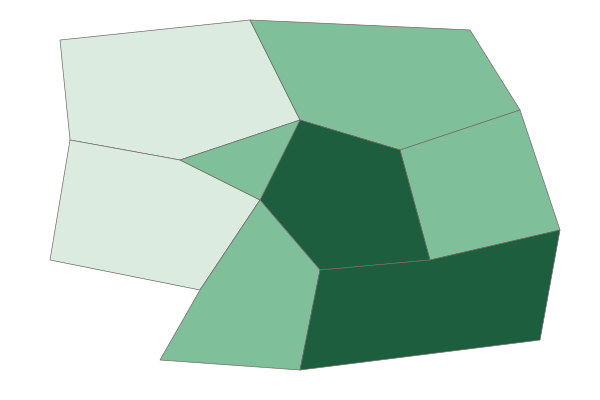

Infrastructure
Infrastructure is the network of transport, utilities, communications and public buildings that lets a place function.
Part 1 · Hook
Why this matters
Part 2 · Prerequisite check
Quick check before you start
1. What is zoning?
- Local laws that set what may be built on each piece of land
- A tax on new homes
- A map of a city's rivers
- A count of the people in a city
Show the answer
Zoning divides a city into zones with rules on land use and density.
- Correct: Local laws that set what may be built on each piece of land:
- A tax on new homes:
- A map of a city's rivers:
- A count of the people in a city:
2. Which are squatter settlements?
- Homes built by residents on land they do not legally own
- Apartment towers built by the government
- Suburbs of large houses
- Office towers in the CBD
Show the answer
Squatter settlements are self-built on land without legal title, often without services.
- Correct: Homes built by residents on land they do not legally own:
- Apartment towers built by the government:
- Suburbs of large houses:
- Office towers in the CBD:
Part 3 · See it
See it first

Part 4 · Step by step
How it works, step by step
- A city lays water mains, power lines and a rail line in some districtsfirms and families can locate there cheaply and safely
- Firms and families gather near that infrastructureland values, jobs and tax revenue rise in those districts
- Districts left without it, such as new informal settlements, lack clean water and fast transportresidents spend more time and money on basics, and health and jobs suffer
- The gap in infrastructure persistspatterns of economic and social development inside the city become more unequal
Part 5 · Key ideas
Key ideas
- Infrastructure is the set of basic systems a place needs to work: roads, rail, ports and airports; water, sewer and power; phone and internet networks; and public buildings such as schools and clinics.
- Its location matters: firms and homes gather where it reaches, so new rail stations and highway exits pull growth toward them.
- Its quality matters: frequent power cuts, unsafe water or crowded roads raise costs and harm health.
- Infrastructure can help some people and harm others: a highway that speeds suburban commuters may cut an old neighborhood in two.
Part 6 · Misconception
A common mistake
The wrong idea: Infrastructure means roads and bridges only.
What actually happens: Infrastructure also includes water and sewer pipes, power grids, internet cables and cell towers, public transit, and schools and clinics. A question about infrastructure may be about any of these.
Part 7 · Check yourself
Check yourself
Exam-style questions. Anything you miss goes into your review queue.
Map
Piped water by province in Country A

Households with piped water (percent, invented)
- Under 40%
- 40% to 69%
- 70% or more
1. Which statement best describes the pattern on the map?
- Piped water is most common in the Northern Hills and Lake District
- Each province has about the same share of homes with piped water
- Highest in the capital and on the coast
- The share with piped water rises steadily from east to west
Show the answer
The darkest class (70% or more) covers the Capital Region and the South Coast; the Northern Hills and Western Uplands are in the lowest class.
- Piped water is most common in the Northern Hills and Lake District: The Northern Hills is in the lowest class, under 40%.
- Each province has about the same share of homes with piped water: The provinces fall into three different classes.
- Correct: Highest in the capital and on the coast: Right: the highest shares are in the capital and on the coast.
- The share with piped water rises steadily from east to west: The Western Uplands is in the lowest class, so the share does not rise toward the west.
2. Firms deciding where to build a food-processing plant need a safe water supply. Based on the map, where are they most likely to locate?
- The Northern Hills
- The Capital Region or the South Coast
- The Western Uplands
- The province with the least piped water
Show the answer
A plant that needs clean water will choose places where the network already reaches. Infrastructure pulls investment toward it.
- The Northern Hills: The Northern Hills has the lowest share of piped water.
- Correct: The Capital Region or the South Coast: Right: firms follow existing infrastructure.
- The Western Uplands: The Western Uplands has the lowest share of piped water.
- The province with the least piped water: That is the opposite of what a water-using plant needs.
3. Which effect would most likely follow in the Northern Hills if the map's pattern lasts for many years?
- More illness and slower job growth
- Faster job growth than in the Capital Region, as firms seek cheap land
- A rapid rise in factories that use a lot of water
- More migrants moving in from the Capital Region to find work
Show the answer
Without piped water, illness is more common and firms that need water stay away, so health and jobs lag. Every link: no pipes, unsafe water, illness and fewer firms.
- Correct: More illness and slower job growth: Right: weak infrastructure holds back health and jobs.
- Faster job growth than in the Capital Region, as firms seek cheap land: Firms tend to avoid places without basic services.
- A rapid rise in factories that use a lot of water: Water-using factories need a reliable supply.
- More migrants moving in from the Capital Region to find work: Migrants usually move toward better services and jobs, not away from them.
Data
A new rail line in an invented city
| District | Rail station? | Average land value 2014 (index) | Average land value 2024 (index) | Jobs reachable within 45 minutes, 2024 (thousands) |
|---|---|---|---|---|
| Riverside | Yes | 100 | 190 | 420 |
| Hillcrest | Yes | 100 | 170 | 380 |
| Millbrook | No | 100 | 120 | 150 |
| Ashford | No | 100 | 115 | 110 |
Invented data for practice.
4. What does the table show about districts with a rail station?
- Their land values fell after 2015
- They have fewer jobs within reach
- Their land values rose more than in other districts
- Their land values rose by the same amount as other districts
Show the answer
Riverside and Hillcrest rose from 100 to 190 and 170; districts without stations rose only to 120 and 115.
- Their land values fell after 2015: Every district rose; none fell.
- They have fewer jobs within reach: Station districts have the most jobs within reach (420 and 380 thousand).
- Correct: Their land values rose more than in other districts: Right: station districts gained the most value.
- Their land values rose by the same amount as other districts: The gains differ: 70 to 90 points with a station, 15 to 20 without.
5. Which best explains the difference in jobs reachable within 45 minutes?
- Districts without stations have more jobs inside their own borders
- Rail makes travel faster
- Higher land values set how many jobs a person is able to reach
- Rail lines slow down travel within a city by blocking roads
Show the answer
A fast rail link stretches how far a resident can travel in 45 minutes, so many more jobs come within reach.
- Districts without stations have more jobs inside their own borders: The table counts jobs within reach, not jobs inside the district.
- Correct: Rail makes travel faster: Right: transport infrastructure widens access to jobs.
- Higher land values set how many jobs a person is able to reach: Land values follow access; they do not create it.
- Rail lines slow down travel within a city by blocking roads: Rail is usually faster than road in a crowded city.
6. In the 1960s, Interstate 94 was built through the Rondo neighborhood of St. Paul, Minnesota, destroying hundreds of homes and businesses. Which statement best describes its effects?
- The groups in the city gained about equally
- Commuters gained speed while Rondo lost homes and was split
- Rondo gained new homes and businesses
- The highway had no effect on land use
Show the answer
Infrastructure can spread costs and benefits unevenly: suburban commuters saved time, while the mostly Black community along the route lost homes, businesses and its connected streets.
- The groups in the city gained about equally: The costs fell heavily on Rondo residents.
- Correct: Commuters gained speed while Rondo lost homes and was split: Right: benefits and costs fell on different groups.
- Rondo gained new homes and businesses: Homes and businesses were destroyed, not added.
- The highway had no effect on land use: Replacing homes with a highway is a major change in land use.
Part 8 · Summary
Summary
Part 9 · Up next
What comes next
Part 10 · Connections